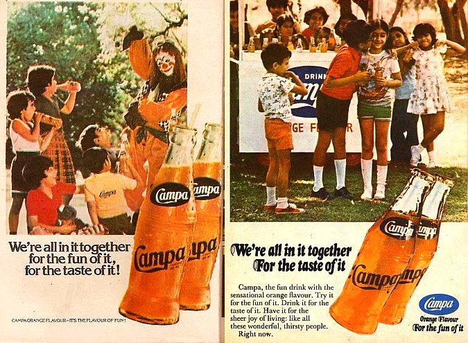

Homem mais rico da Ásia vai relançar a concorrente da Coca-Cola na Índia
Gosto antigo, garrafa nova. O homem mais rico da Ásia, Mukesh Ambani, anunciou planos para relançar a Campa Cola, uma icônica marca de refrigerante indiana que rivalizou com a Coca-Cola e a Pepsi em 1970. 🥤. A reintrodução será feita pelo Reliance Group — companhia de Ambani — e deve acontecer ainda neste verão.
Nem precisou de marketing. A notícia despertou interesse em milhões de indianos de meia-idade que cresceram saboreando a bebida, provocando uma onda de nostalgia nas redes sociais.
Contexto
A Coca-Cola começou a ser vendida na Índia em 1950, mas saiu de mercado duas décadas depois, quando o governo introduziu um regulamento que exigia que a empresa revelasse a sua fórmula.
📈 Nessa ausência, a Campa Cola tornou-se imensamente popular e passou a liderar o mercado de refrigerantes do país. Assim como o rival americano, a marca também investiu em campanhas publicitárias cativantes.
📉 Porém, em 1990, quando o governo indiano abriu o país para investimentos estrangeiros, a Coca-Cola retornou para o mercado, a Pepsi e a Fanta se popularizaram e a Campa Cola desapareceu das prateleiras.
Agora, com o retorno, a Reliance espera atrair os indianos nostálgicos e conquistar os jovens que gostam do “vintage” — além de preocupar a Coca-Cola, que tem a Índia como um de seus principais mercados em volume global.